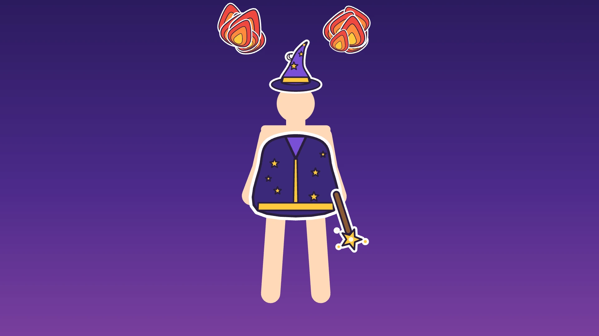
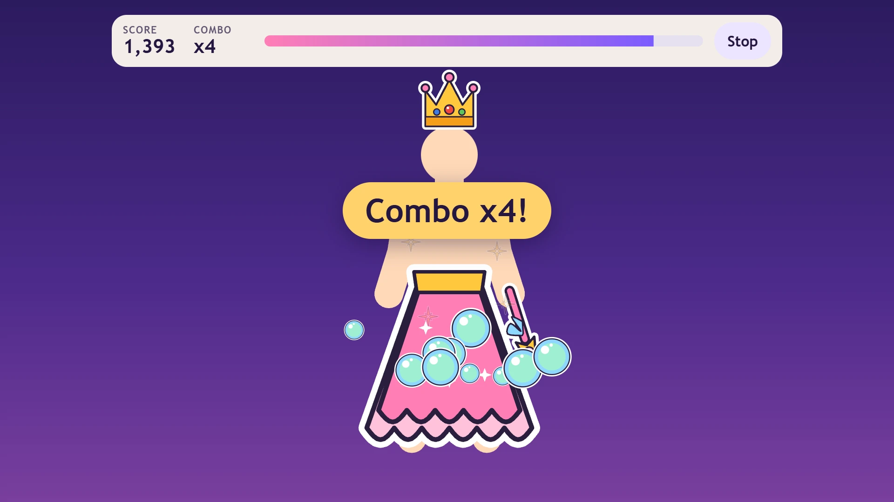
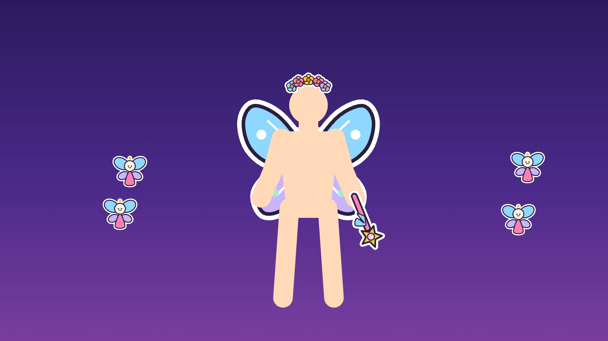

Magic Mirror Moves — dress up in the camera and move to make magic
Stand in front of the camera and Magic Mirror Moves shows your child dressed as a wizard, a princess, a ghost, a fairy or a dragon. Then their own body makes the magic happen.
Runs in your browser. The camera picture never leaves your device.


Every move makes magic
A card shows a move with a little stick figure doing it. Your child copies it, and the costume answers. Arms up and the wizard shoots flames from both hands. Flap like wings and fairies fly in from the edges. Spin around for a sparkle tornado, hide behind your hands and throw them open for a burst of ghosts, or put both hands on your head and a crown starts to glow. There are nine moves in all, including the star jump and the crouch.
Points, combos and stars
Every move done in time scores points, and the faster the better. Moves in a row build a combo, up to four times the points. The last 10 seconds are a finale with bigger magic, and the round ends with one to three stars. Little is for ages 4 to 6 and Big is for 7 and up. For the youngest, free play has no timer and no cards: every move they make sets off its magic.
The camera picture stays on your device
The camera picture stays on your device. Everything happens inside your browser tab, and no code of ours runs on a server. The game looks at each frame only long enough to spot where the arms, legs and head are, then lets it go. Nothing from the camera is uploaded, recorded or saved. There is no tracking, analytics, cookies or ads, in the game or on this page. All it remembers is a best score per mode, a single number kept on your own device.
Free, and a demo without a camera
It is free, with nothing to download and no account. No camera? The demo mode plays with a pretend player, so you can see how it works first.